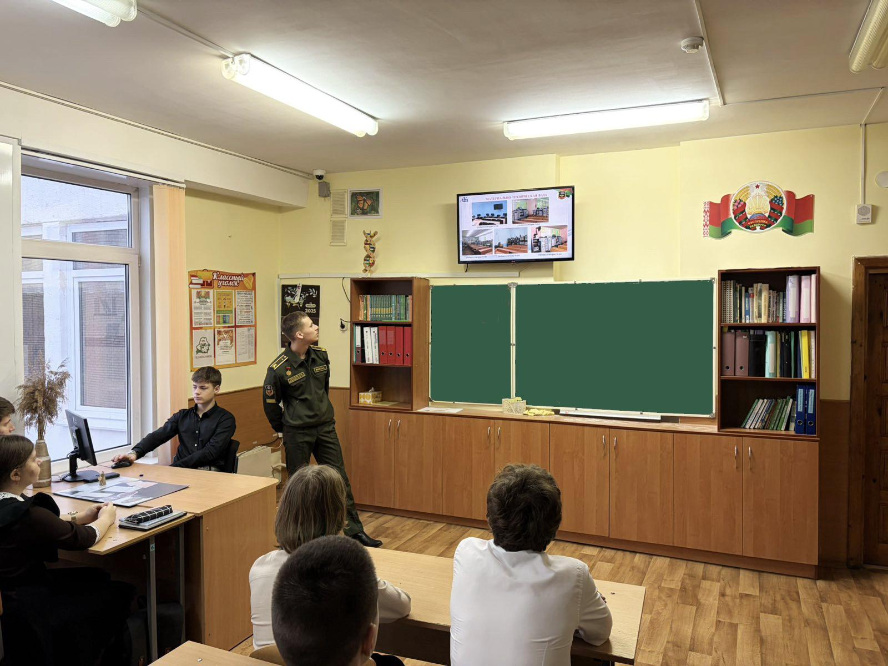
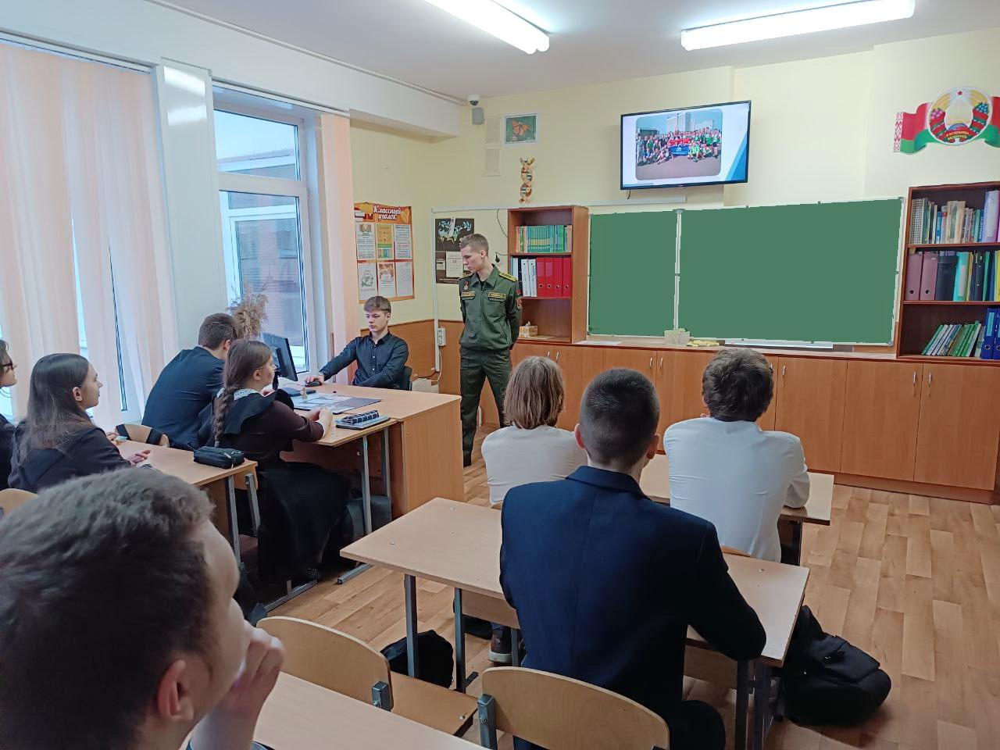
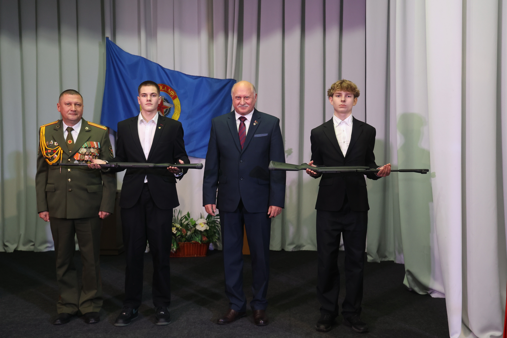
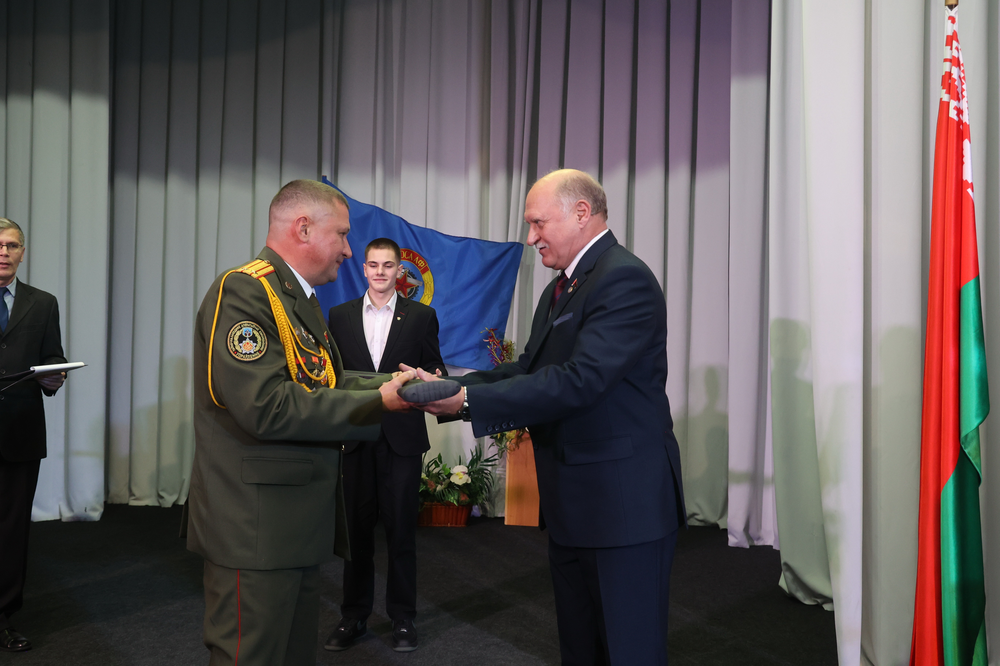
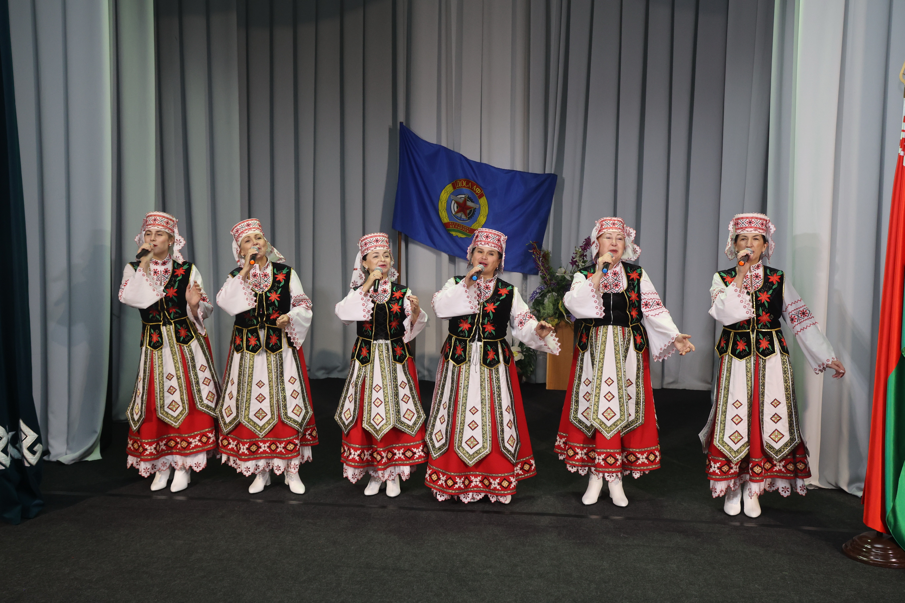
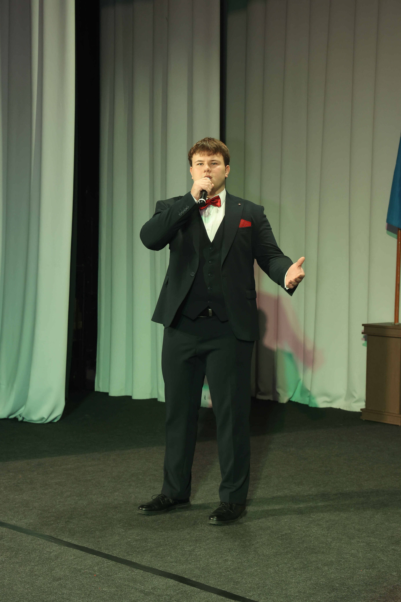
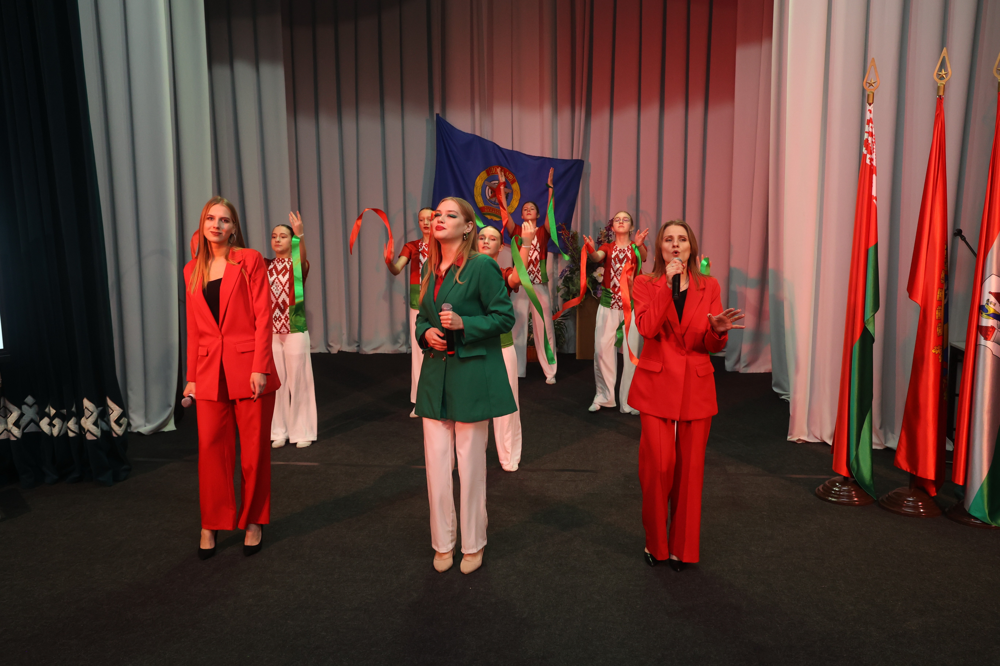
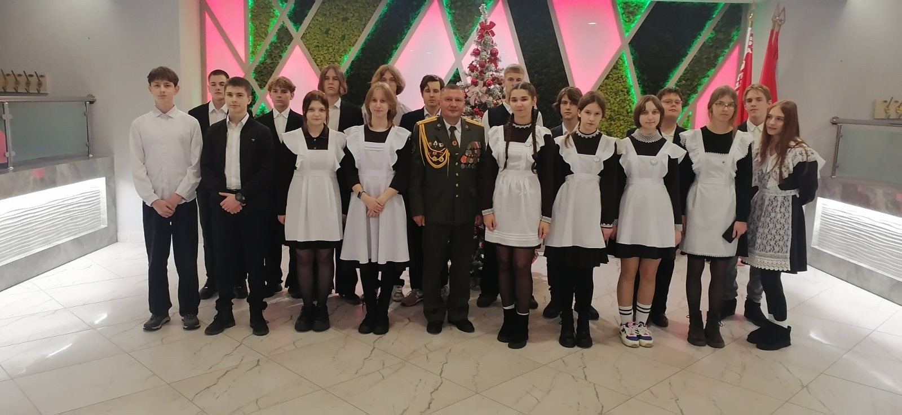

ИЗ ВОЕННОЙ ДИНАСТИИ
5 декабря состоялась профориентационная встреча учащихся 11 «В» и 11 «Г» классов Государственного учреждения образования «Гимназия №1 г. Борисова» с курсантом военного факультета учреждения образования «Белорусский государственный университет информатики и радиоэлектроники» Алексеем Кашко.
Алексей окончил гимназию в 2024 году, в настоящее время обучается на 2 курсе военного факультета по специальности «Системы и сети инфокоммуникаций». Решение стать военным не было спонтанным – отец Алексея, офицер запаса, по сей день работает в 139 центре метрологического обеспечения, старший брат, также выпускник нашей гимназии – офицер, служит в Минске.

В рамках профориентации Алексей продемонстрировал и прокомментировал ребятам рекламный видеоролик о военном факультете, довел информацию о проходных баллах, специфике обучения, денежном довольствии курсантов, ассортименте блюд в столовой, быте и досуге курсантов. По завершению мероприятия Алексей ответил на все возникшие у гимназистов вопросы.

ГИМНАЗИСТЫ ПРИНЯЛИ УЧАСТИЕ В ТОРЖЕСТВЕННОМ СОБРАНИИ, ПОСВЯЩЕННОМ ЮБИЛЕЮ БОРИСОВСКОЙ ООС ДОСААФ
5 декабря во Дворце культуры им. М. Горького состоялось юбилейное торжество Борисовской объединенной организационной структуры ДОСААФ. Поздравить организационную структуру с 60-ти летним юбилеем пришли многочисленные гости, в том числе представитель Совета Безопасности Республики Беларусь Александр Соколовский, председатель центрального совета ДОСААФ генерал-майор Андрей Некрашевич, председатель организационной структуры города Минска и Минской области ДОСААФ Алексей Евстигнеев, командующий войсками Северо-западного оперативного командования генерал-майор Александр Бас, представители Борисовского районного исполнительного комитета.

В мероприятии приняли участие учащиеся 10 «Б» класса Государственного учреждения образования «Гимназия №1 г. Борисова». К слову сказать, пять гимназистов из класса являются членами организационной структуры.

История образования Борисовской ООС ДОСААФ неразрывно связана с открытием в Борисове первой самостоятельной учебной организации по подготовке водителей. Этот статус получил Борисовский автомотоклуб 3-го разряда согласно решениям республиканского и Минского областного комитетов оборонного общества. С тех пор организационной структурой было подготовлено свыше 70 тысяч водителей различных категорий. Ежегодно, начиная с 2004 года, Борисовская ООС ДОСААФ признавалась лучшей среди оргструктур г. Минска и Минской области ДОСААФ. В 2009 году Борисовская ООС ДОСААФ стала победителем в смотре-конкурсе Министерства транспорта и коммуникаций Республики Беларусь на лучшую организацию, осуществляющую подготовку водителей, в 2011 и 2013 годах – занимала третье и второе места соответственно.

В своем докладе председатель организационной структуры города Минска и Минской области ДОСААФ Алексей Евстигнеев отметил и деятельность первичных организаций по выполнению государственно значимых задач, и прежде всего патриотическому воспитанию граждан. Среди лучших первичек была отмечена и наша гимназия. За активную работу Алексей Евстигнеев вручил в качестве подарка гимназической первичке пневматическое оружие.

В ходе мероприятия свой музыкальный подарок юбилярам в перерывах между награждениями преподнесли Анастасия Барановская, Виктор Попов, образцовый ансамбль «Вдохновение», народный ансамбль «Спадчына», народный ансамбль эстрадной песни «Поверье» и образцовый ансамбль танца «Ручеек».

